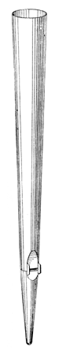
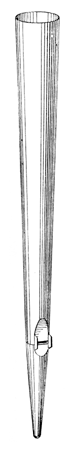

|
Dolce Italian Dolciano (unknown) Douce French |
The name Dolce was, according to Grove, commonly used c1600-c1800 for any soft stop, and was thus often indistinguishable from Flauto Dolce and Dolcan. It appears to have always been a flue stop. It was introduced to England in 1741 by Snetzler in his organ at the Parish Church, Chesterfield, Derbyshire, England. Snetzler's Dolce was a soft metal flute. It was then popularized by Schulze, whose organs, according to Bonavia-Hunt, nearly always contained one.
All that can be definitively said about the tone of the Dolce is that it is soft and sweet. While Skinner and Irwin insist that it is not stringy, Audsley, Sumner and Wedgwood state otherwise. Bonavia-Hunt and Wedgwood characterize it as fluty; Wedgwood, Sumner and Irwin give it (ideally) a touch of horn quality.
Over the centuries stops named Dolce have been constructed of metal, in cylindrical, inverted-conical, and (less often) conical forms, and also of wood. The canonical form, if there can be said to be one at all, is inverted-conical. According to Wedgwood, German builders sometimes gave double mouths to their wooden Dolces.
Audsley gives the following scale, stating that the mouth should not exceed 1/5 of the circumference at the mouth, and the cut-up should not exceed 1/4 unless a flutier tone is desired.
| CC | C | c1 | c2 | c3 | c4 | |
| at mouth | 3.08" | 1.89" | 1.15" | 0.71" | 0.43" | 0.27" |
| at top | 4.10" | 2.51 | 1.54" | 0.94" | 0.58" | 0.35" |
According to Bonavia-Hunt, 4' C ranges from 1-3/4" to 2-1/4" at the mouth, with the top of the pipe being 3/2 that diameter, and a mouth that is 2/9 or 1/4 the top circumference. Wedgwood cites Compton's Dolce as having mouth and top diameters at 8' C of 3" and 4" respectively, and at 4' C, 1-3/4" and 2-1/4". The same source gives the scale of a Binns Dolce at 4' C as 2" at the mouth and 3" at the top.
The name Dolce has at times been used as a synonym for Dulciana, for a Swell Bourdon borrowed onto the Pedal, and, by Brindley & Foster, for a Swell Rohrflöte borrowed onto the Great.
The name Dolciana has other definitions.
The illustration reproduced here is Wedgwood's.
|
'Cello-Dolce Dolce Céleste |
Dolce Cornet Dolce Mixture |
Dolcette Octave Dolce |
Osiris contains over six dozen examples of Dolce, fifteen at 4' pitch, nine at 16', and the rest at 8'. The oldest examples are listed below. No examples are known of Douce, mentioned only by Grove and Williams. Contributions welcome.
Dolce 4', Hinterwerk; Kath. Pfarrkirche St. Martin, Altheim bei Riedlingen, Germany; Weigle 1856. Moved to 8' pitch in 1915.
Dolce 8', Swell; South Congregational Church, Boston, Massachusetts, USA; Hook 1864.
Dolce 8', Swell; Chickering Hall, New York City, New York, USA; Roosevelt 1876.
Dolce 8', Schwellwerk; Votivkirche, Vienna, Austria; Walcker 1878.
Would you like to hear what a Dolce sounds like?
For as little as $10 (US), you can sponsor a page in this Encyclopedia, and help purchase more sound samples!
|
Original site compiled by Edward L. Stauff. For educational use only. Dolce.html - Last updated 31 December 2007. |
Home Full Index |